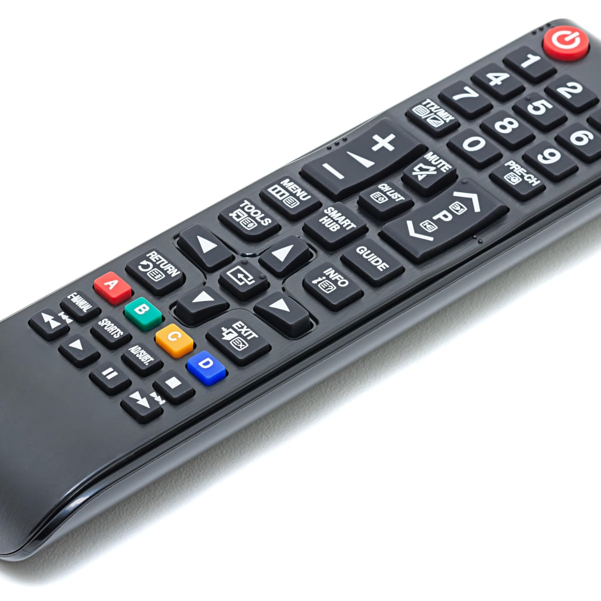

Case Study
-
Test Image -

-
Test Image -
Output on Google lens - TV remote
Output on Mobilenet model - remote control, remote
Result -
Both are accurate (Draw)
-
Test Image -

Output on Google lens - Bed
Output on Mobilenet model - comforter, comfort, puff
Result -
Google Lens is more accurate
Test Image -
Output on Google lens - book
Output on Mobilenet model - comic book
Result -
Google Lens is more accurate
Test Image -

Output on Google lens - chair
Output on Mobilenet model - pinwheel
Result -
Google Lens is more accurate
Winner -Google Lens is more accurate. I have tested 5 images here as you can see.
Out of them Google Lens has given more correct answers. results - Google Lens VS MobileNet
= 5 and 2 with two draws